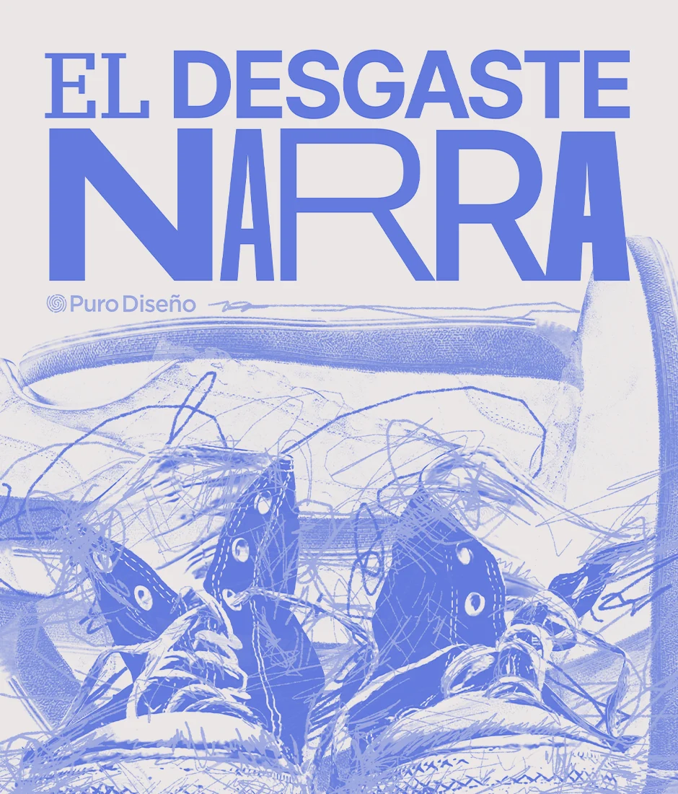
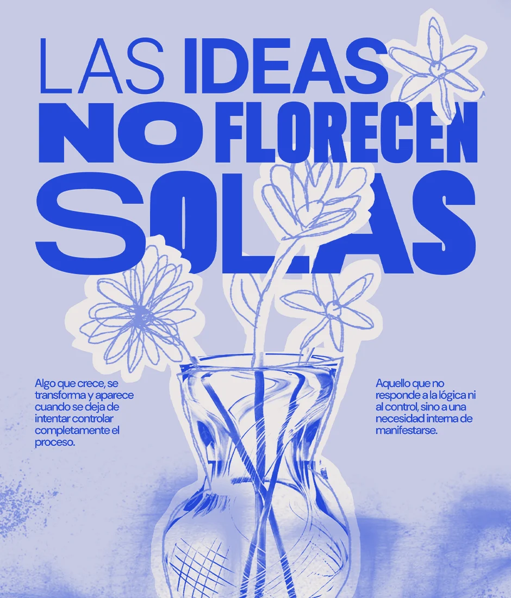
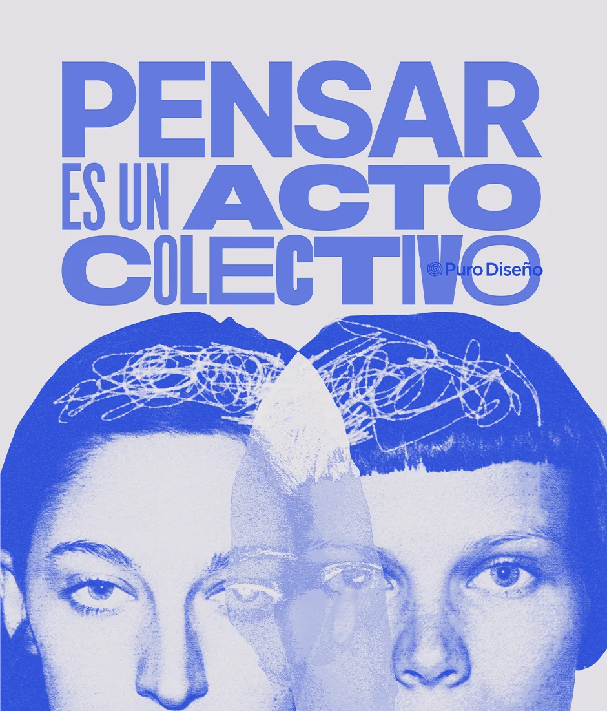
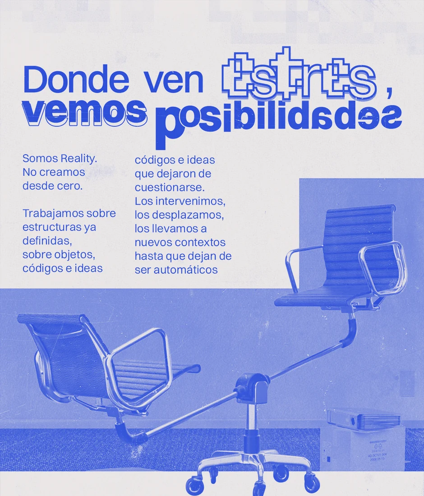
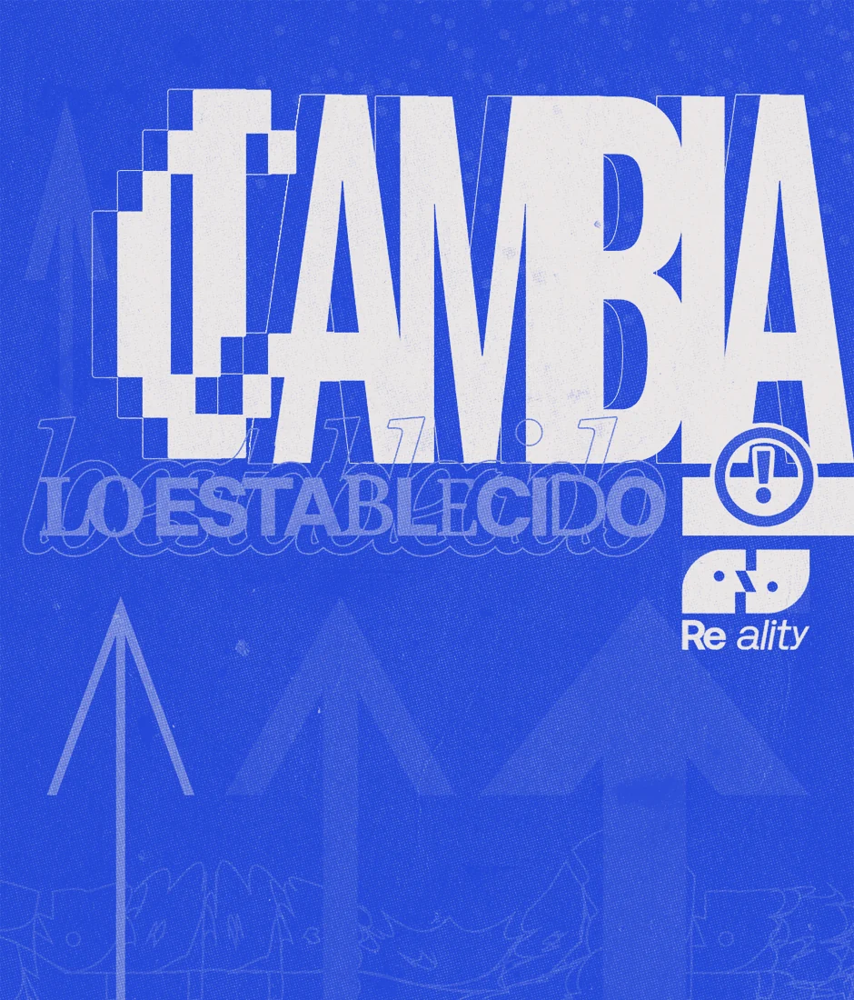
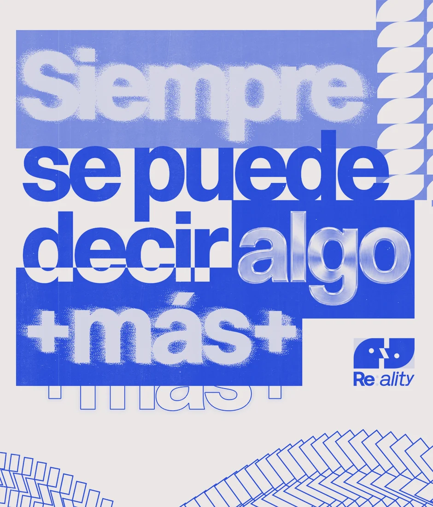

¡Hola!
Soy Damián Forestier, un diseñador gráfico egresado de la Escuela DaVinci.
Esta es mi web, un espacio donde podés encontrar un poco de información acerca de mí y mi trabajo.
Soy Damián Forestier, un diseñador gráfico egresado de la Escuela DaVinci.
Esta es mi web, un espacio donde podés encontrar un poco de información acerca de mí y mi trabajo.
Distintos tipos de trabajos como pueden ser Branding / Diseño de marca / Editorial / Packaging / Merchandising / Redes sociales / Motion graphics / Edición de video / Diseño 3D





